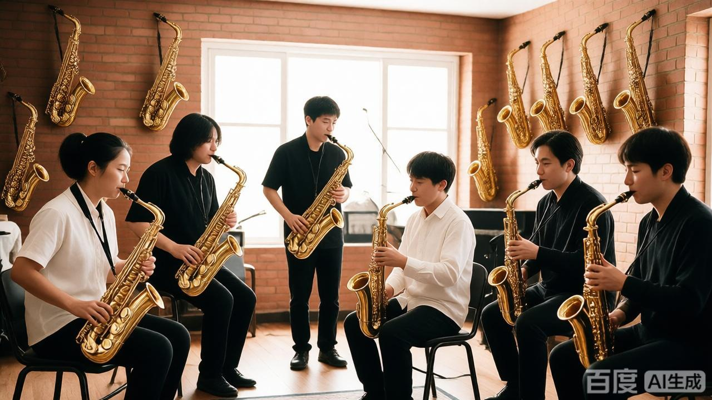

社团简介 | 活动安排 | 风采展示 | 社员故事 | 在线报名
校园萨克斯社成立于 2015 年，是学校内最活跃的文艺类学生社团之一。 社团以萨克斯为主要载体，组织声部排练、爵士合奏、校园音乐会等多种形式的活动， 为喜爱音乐的同学提供一个交流与展示的平台。
无论你是零基础的新手，还是已经能熟练吹奏的老玩家， 只要对萨克斯和音乐有兴趣，都欢迎加入萨克斯社。 社团会安排老成员一对一帮带，帮助大家从口型、气息到舞台表现逐步提高。
社团平时的活动地点主要在音乐楼的排练厅， 每周会安排固定的排练时间，也会根据需要加练， 为各种校园演出和比赛做好准备。
为了让大家更好地了解萨克斯社的日常，本学期计划安排如下几项主要活动。 具体时间可能会根据学校统一安排略作调整，详情请关注社团通知。
| 萨克斯社 2026 年春季学期活动安排表 | |||
|---|---|---|---|
| 活动名称 | 活动时间 | 活动地点 | 负责人 |
| 新成员见面会 | 3 月第 2 周 周五晚 | 音乐楼 排练厅 203 | 周牧 |
| 萨克斯基础教学公开课 | 3 月第 3 周 周六下午 | 林知夏 | |
| 校园草地音乐会 | 4 月第 2 周 周日 | 操场东侧草坪 | 许一诺 |
| 期末专场音乐会 | 6 月第 1 周 周六晚 | 大学生活动中心 大礼堂 | 陈慕白 |
上表仅列出了部分代表性活动，日常还会有小型即兴合奏、经验分享等活动， 欢迎有想法、有创意的同学参与策划。
下面是一张社团日常排练的照片。点击图片，可以查看更详细的活动介绍页面。 在实际使用中，请根据自己的图片文件名进行修改。

图中为上学期社团日常排练的场景，成员们正在进行声部合奏练习。 平时的训练与排练，都会在正式演出中得到充分的展示机会。
下面示例演示如何在页面中嵌入一段萨克斯社宣传视频。 如果暂时没有真实的视频文件，可以先保留代码结构，待以后再替换为真实文件路径。
小林大一加入萨克斯社时完全不会吹萨克斯，连笛头怎么装都不知道。 在学长学姐的帮助下，他从最简单的口型、长音练起， 每天利用晚自习后的一小时进行练习。 一个学期之后，他已经能够独立完成好几首爵士标准曲， 并在新年晚会上完成了自己的首次舞台表演。
小周是一个比较内向的同学，以前不太愿意在公众场合讲话。 加入萨克斯社后，大家一起排练、一起讨论音乐，让他慢慢习惯在别人面前开口。 在一次小型社团汇报演出中，他鼓起勇气吹完了一首自己喜欢的曲子， 得到了台下同学的热烈掌声，也找到了更多的自信。
很多同学表示，加入萨克斯社最大的收获不仅仅是学会吹奏，更是认识了一群志同道合的朋友。 大家一起交流曲目、互相推荐喜欢的歌手和乐队，一起练琴、一起排练， 在忙碌的学习生活之外，多了一份轻松与陪伴。
如果你也喜欢音乐，期望在大学生活中拥有一段与萨克斯相关的美好回忆， 欢迎加入我们，一起在铜管上演奏青春的旋律。
请认真填写以下信息，确保联系方式准确无误。 提交后，社团会通过电话或短信的方式通知面谈或试音时间。
提交表单后，如需修改信息，可以再次填写并提交最新的一份。
校园萨克斯社 · 2026 年招新网页
让呼吸有形状，我们在这里等你。